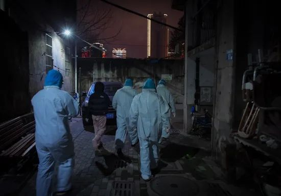
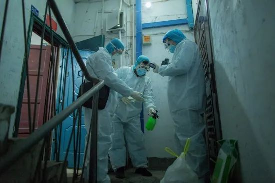
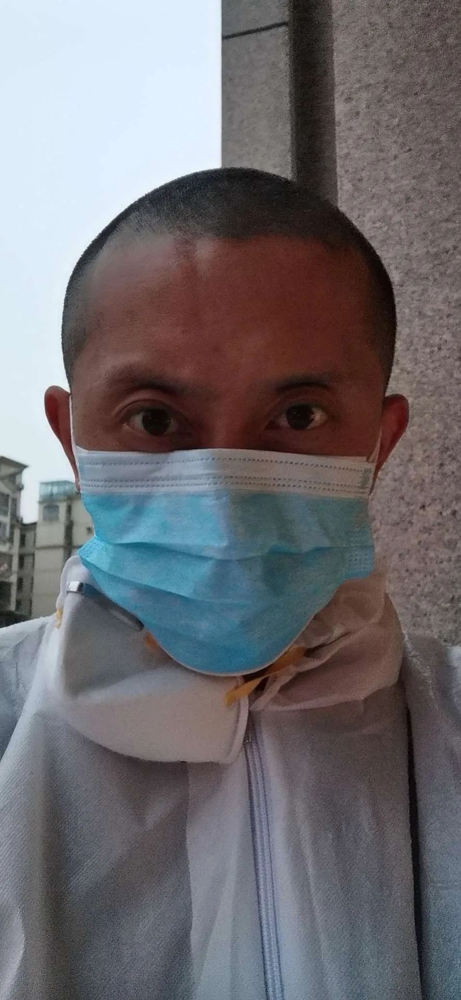
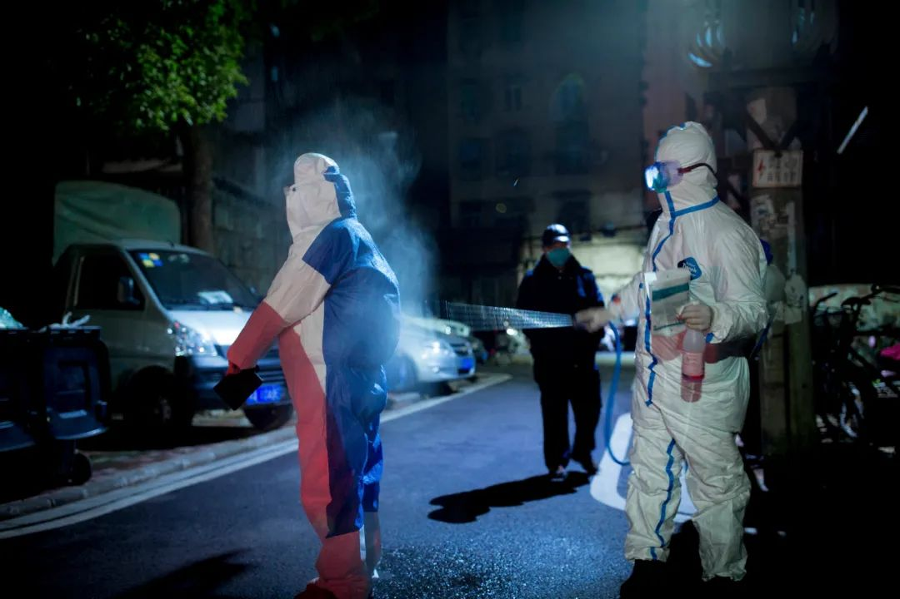
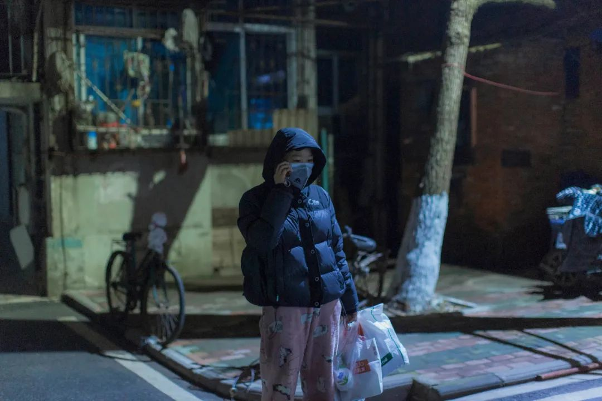

口述实录：大连小伙儿小强的武汉奇遇 | 武汉武汉
原文链接 备份链接 我是记者郭静。 见到大连小伙儿小强前，我就听说了他的离奇故事：本打算去湖南办事的他，竟误打误撞，在武汉下了车。为了不露宿街头，他找到了在医院隔离区打扫卫生的工作，就这样，上了抗击疫情的第一线！ 采访，就在他的宿舍，他 …
疫情把整座城市卷进车轮，大部分人是被动的，也有一些人，主动加入，在城里奔波，心怀侠义精神，为武汉人做点事。
记者 | 驳静（发自武汉）
摄影 | 黄宇
夜 间
“都有，我们什么都有。”
志愿者给我发了个定位，没说几点得到，只说防护用品齐全。我匆匆准备出门，心想那自然是越快越好。这时是晚上8点，摄影师老黄跟另一位同事出去采访，接到我消息时车刚开到酒店楼下，回来得正是时候。听我说完，老黄干脆没上楼。我抓了一个口罩戴上，想了想，又往包里塞了两件隔离衣，下楼去跟他会合。
定位是间小酒馆，在武昌区友谊大道与和平大道之间，隔江与我们所在的酒店相望，只需穿过长江二桥，20分钟到达。
我在车上跟老黄同步我知道的信息。实际情况是，我知道的并不多，只知道我们前往小酒馆，与几个志愿者在那里会合。到小酒馆后，在这里穿戴齐整防护用品，再一同前往新冠肺炎患者家中。接头人叫郑恺，志愿者之一，这些天一直在响应网上的求助。微博上“肺炎患者求助超话”曝光度很高，许多情急之下无可奈何的患者，将病症等情况发到这个“超话”中，它们被大量转发，还经常以截图形式传播在微信朋友圈中。求助者的姓名与电话，就这样传播在互联网世界中。
2月7日晚，一位近80岁的婆婆在家中去世，志愿者将消息发在朋友圈，“奶奶没了脉搏，不需要床位了”。郑恺与另外两位志愿者，晚上一同去处理后事。
一进小酒馆，气氛紧张，这是我到武汉的第四天。我上午曾去隔离酒店，与为家人求医的年轻人周洋一同看望他爷爷，中午也曾到天佑医院门诊大厅，但都没有此时此刻气氛紧张。我感到心跳加速，一是因为郑恺语速急促，指导我们穿戴，一面又不断接电话、发信息，仿佛有一万件事同时需要他处理。二是因为小酒馆灯光暗淡，视野不清，吧台里黑漆漆，外间亮着灯，不过也勉强够看，我们沿着吧台走到酒馆最深处，在此处边穿戴边提问，像是地下党接头；地上散落几箱防护物资，桌上也有口罩等一应装备，果然如先前所说，“东西都有”。三是因为，就在10公里外，死者家属正在等我们。家属有儿子陆国修，年过半百，新冠肺炎确诊患者，孙女陆海月，二十出头，正不知所措。出发迫在眉睫。
两辆车，他们在前，我跟老黄紧随其后。车停在武昌区中南路附近的一条街上，然后步行进入。
夜色厚重，小区里路灯同样暗淡。一团人围在社区服务中心门前，有穿保安制服者，也有像我们这样全副武装者，另外还有两辆派出所的SUV停在社区门口。几分钟后这两辆车先走一步，车道狭窄，调头时颇为费力，在场的人目光大都被它们吸引，目送其离开。其中一辆车的车窗缓缓落下，一个声音对着郑恺的方向说“那辛苦你们了”，郑恺圆滑应对，“应该的应该的”。人群外围，有一年轻姑娘，穿着粉色摇粒绒睡裤，黑色羽绒外套，脸上简单戴一口罩，面目看不大清楚，但眼睛里透着一股力量。见我同她谈话，立刻往右移动两步，“最好离我远一点”，“我虽然没做过检查，但我肯定是感染的了”。隔着大约三米，我们谈了几句。我没敢多问，她声音里明显带哭腔，刚刚去世的，正是她奶奶。

郑恺向社区工作人员咨询，新冠肺炎病人在家中离世后，接下来是何种程序。得知，第一，打给疾控中心，由他们派人来消毒；第二，办死亡证明；第三，殡仪馆来车把尸体接走。
等人群散去，包括郑恺在内的三位志愿者与我、老黄以及陆海月一行人，转移阵地，前往陆海月家所在那栋楼。此时已是晚上9点半。

2月7日，陆海月说，“哭解决不了任何问题，眼泪是最不值钱的东西”。
上三楼。门开着，陆海月、三位志愿者和老黄依次入内，我殿后，等我走到门前，已经踏不进去——客厅太小了，一下挤进去五六个人，又都是穿戴着防护服、拿着工具的，已没有太多空间供人转身。我站在门口张望。这是个两室一厅，没有玄关，大门正对厨房门，厨房门紧闭。右手两间卧室门，一间关着，一间敞开，敞开的门里走出来陆国修，他正在穿外套，手里活动着，人却沉默不语，只是站在那里，没有跟众人寒暄。而紧闭的门内，躺着几个小时前去世的陆海月的奶奶。
几分钟后，我还是进屋了，刚在门外听起来还比较隐约的狗叫声，变得清晰起来，听声音方向，正是正前方，想必是关在厨房里，一声紧似一声，或许是被关得久了。陆海月收拾着两只口袋，终于问：“狗怎么办？”郑恺答：“都什么时候了，还管得了狗。”
志愿者带着大喷壶，要对海月奶奶的房间大肆消毒。疾控中心在电话中告诉郑恺，他们会来，但是要等，前面还排了7户。后来疾控中心一位30岁左右的男性工作人员向我确认，他们原本的确需要第二天才能过来消毒。7户，每户人家平均要花去他们两个小时，轮到陆家，起码得第二天中午。

不过即便当晚消毒完毕，陆海月父女，这个晚上仍然不可能留在这间房子里过夜。首先，从小到大，陆海月都是跟奶奶睡一个屋、一张床，虽然是头对着脚，也是亲密无间。现在已故的奶奶不得不继续留在屋里，家里还剩一个房间，一对父女，无处可去。
摆在郑恺面前的问题，是如何安置他们。
最理想的做法，当然是社区出面，给他们安排到隔离酒店。陆国修早就确诊，核酸检测呈阳性，曾高烧39.8摄氏度，居家隔离几天后，烧退了，症状减轻，如果放到若干天后，“应收尽收”政策下，可以住进方舱医院。而陆海月，作为密切接触者，也该由隔离酒店接收，从做核酸检测开始，一步步往前走。但此时此刻，情势逼人，社区并没有插手的意思。
我想起白天，和老黄到过一家叫作艳阳天的隔离酒店，当时是跟着年轻人周洋去看望爷爷，分明在那里看到有多间空房。病急乱投医，我提议，可以去“艳阳天”碰碰运气。不过，一来手中没有街道出具的证明，二来他们不在同一辖区，能被接收的可能性不大。
郑恺招呼陆海月父女上另一辆车，自己则上了我们的车，他在地图上找到一家最近的酒店，十几分钟可达。老黄开车，我在副驾驶，郑恺在后座，他探过身来，口中念念有词，像是与我们商量：“这酒店才200块一晚，他们又刚死了最亲的人，想再找找别的酒店。”郑恺的意思我听明白了，一个刚失去了祖母，一个刚失去了母亲，二人这个晚上的归宿，如果是破陋的小旅店，他心中不忍。
两辆车行进在夜色中的武汉，这回是我们的车在前，另一辆车在后，只不过大家都不知道去往何处。老黄开着车，为没有明确目的地感到踌躇，我回头看郑恺，等他拿主意。犹豫几分钟后，他在后座拨通了一个电话，语气仍十分急迫：“你们今晚还有房吗”，“套间也行”，“我有钱，一万块够吗”？挂掉电话，紧急调头，他为父女二人找到一间他认为过得去的酒店。出乎我意料的是，这个时期竟然还有开门迎客的酒店。
找到落脚点，郑恺放松下来，开始同我们讲述当天下午发生的事。
傍 晚
2月7日傍晚发生的事，是一位病重老人离世的过程。这几幕不容易叙述，也不容易还原，但陆海月忘不掉。第三天，她住进隔离酒店，一周后，又得以住进方舱，不管换到哪里，晚上都睡不好，总想着奶奶和狗。当时她和爸爸就在奶奶身边，在场者除了他们父女，郑恺也能算半个，他通过视频见到了海月奶奶最后一面。
陆海月一家是郑恺投入志愿者行动之后，救助的第二个家庭。郑恺第一次去陆海月家，带了肉和泡面等食物，还有口罩和电热毯。陆海月去路口接他，见他拎着两大袋东西，下着雨，没打伞。陆海月心想，这种时候，连自家亲戚都不愿意上家里来了，这个人却要上楼。郑恺是那种“上楼”“到病房里去”的类型。不上楼，他就发现不了后来他总跟我提起的几件事，一是陆家家里几乎没吃的，二是家里非常冷，有空调，但舍不得开，没有热水器，唯一的热水来源是一只烧水的壶。陆海月听郑恺说，第二天他会再来。自从求助信息在网上发布，陆海月接到无数电话，许多人给她出主意，让她去某个医院试试运气，让她给某个热线打电话，像郑恺这样直接杀到家里的，几乎没有。
第二天就是2月7日。下午，郑恺给陆家消完毒，安抚老人家，说：“在家好好养病，一定会去医院的。”接着郑恺就去社区反映老人的情况。
一直以来，海月奶奶没有力气，生活不能自理，大小便失禁。最早是陆国修出现新冠肺炎症状，2月2日，陆国修去第七医院做检查，凌晨到家，CT片显示双肺感染，核酸检测结果2月5日也拿到了，是阳性。连续几天都高烧不退，之后家中一老一小相继出现症状。奶奶病后，陆海月的两个姑姑也会来送药送食物，但照顾起居、操心病床、对外求助，这些事都得依靠陆海月。她腾不出空去做检测，家里两个病人，离不了人。不过陆海月心里明白，自己多半也得病了，她头昏，腹泻，偶尔体温会上升，并且嘴巴一直发干。没吃对症的药，也没做检查，陆海月依靠的是“自己的心态”，“所有的器官都在做努力”，就这么撑着。

陆海月的家
这天傍晚，海月奶奶靠自己爬下床，坐上痰盂。痰盂受力不均，歪了，老人家倾倒在地。一片狼藉，陆海月心中慌乱，她试图把奶奶提起来，使了大劲，仍然提不动。她去隔壁房间把爸爸叫过来，两人合力，仍以失败告终。她哭着跑去社区，想求人帮忙，与社区工作人员的交涉超过5分钟，交涉片段，陆海月录了音，她后来有播给我听。我听到的是情绪越来越激动的两个人，一个是年轻姑娘，惊慌失措地去求救，一个是中年男子，听到了令他感到匪夷所思的诉求。双方不欢而散。
被社区的工作人员拒绝后，海月又赶紧跑回家。其间，她打了所有急救电话，又与郑恺拨通视频电话。镜头对着奶奶，郑恺让她去试探体温，陆海月伸手试了手背、额头，“都是冰的”。视频里，郑恺看到了老人的眼睛，瞳孔里的光消散了。郑恺最后让陆海月去按颈动脉，陆海月照做，“脉搏也没了”。手机“啪嗒”一声掉到地上。再打，陆海月就不接了。六七分钟后，才重新通上话。
陆海月后来告诉我，奶奶一直以来都没有力气，一直都给她一种快不行了的感觉，呼吸有很大问题，所以没让她戴口罩，因为一戴上口罩就更喘不上气。但她能感觉到奶奶想活着，“她跟我说，自己怎么办，这样怎么办，要是有医院就好了”。“我不敢相信奶奶是以这种方式离开的。体温、脉搏，全部都试了，我还一直摇她，不动，敲她，还是一动不动。”讲到这里，我没再往下问，语言咽入肚中，没发出任何声响。
陆海月从小由爷爷奶奶养大。她听邻居说，她刚出生时，她妈妈把她“丢在门口”。当时对门也住着一个孕妇，一开门看到对面家门口有一个娃，敲门，是奶奶开的。奶奶一看那个娃，就知道是谁，她把孩子抱回家，养了起来。很长一段时间，陆国修也不在家，他在外面打工，海月就跟爷爷奶奶相依为命。直到五年前，爷爷去世，陆国修才回武汉，跟一老一小住到了一起。关在厨房里的狗，就是爷爷去世后开始养的，“奶奶一个人怕孤独，狗陪她这么多年。她最放心不下的就是狗”。狗没有名字，陆海月管它叫“弟弟”。

打小海月就跟奶奶睡一个屋、一张床，长大一点后是头对着脚这样睡。懂事起，就开始帮奶奶打胰岛素。当然主要是奶奶自己操作，不过海月负责拿手电筒照着，早上打12个单位，上到“13”，排气，海月充当眼睛，盯着胰岛素笔上这些数字。还得负责拿棉签蘸酒精，出血了给按上。从前为了给海月支付学费，爷爷退休后还去琴行做保安，有一次回家路上叫车撞了，也默默回了家，腿上血淋淋一片，海月记得。奶奶也非常善良，总照顾楼下的流浪狗，有时候下楼喂，实在下不去，拿绳子吊着一个碗，装上食物放下楼。
一家人都特别怕麻烦别人，海月继承了这种性格。自疫情在家中蔓延，并且自己也有症状以来，海月也找过社区，大都是打电话，偶尔上门去求救，也都站在门口，离人两米远。一直到最后情况不可控，她才上网发了求助。
更早之前
郑恺，武汉本地人，1982年出生，父亲是铁路公安，他自己后来也进入铁路系统工作，在动车上做列车员，武汉九省通衢，郑恺跟着铁路跑过很多地方。不过他小时候的梦想是当警察。
志愿者郑恺的自拍
郑恺父亲退休之前任职于铁路公安巡警大队，当年家里有不少卷宗，反扒的、缉毒的，应有尽有。郑恺读着这些案件分析长大，从小就擅长侦查与反侦查，脑子里一派对行侠仗义、扶弱济困的向往之情。小时他经常被爹妈锁在家里，卷宗给他灵感，他想到办法，不开门不用钥匙，从七楼阳台翻出去，再毫发无损地回到家里。有一次在游戏厅兴奋过了头，忘了回家时间，爹妈一回家发现门窗是好的，孩子没了，报了警，这个捉迷藏的游戏才告一段落。除此之外就是读金庸，对侠客痴迷，最喜欢令狐冲和东方不败，前者桀骜不驯，后者特立独行，是他最喜欢的两个人物。
1998年，郑恺16岁，应征入伍，服役于湖北省武警总队。第二年，郑恺就跟部队去抗洪，驻地在湖北省松滋市的一个县，住在一间学校。有一天，郑恺与战友抬一桶热水，喊“1、2、3，抬”，战友抬早了一个数，开水眼看要荡出水桶，旁边站着个孩子，郑恺抬脚将孩子踢开，开水泼了一大片在手上。烫伤严重，抹烫伤膏了事。之后晚上巡堤，二人一组，发现“管涌”，紧急抢险，搬了不少大石块，烫伤处溃烂得更加不堪。这给郑恺留下长久的后遗症，普通人徒手从蒸笼里抢个馒头，不在话下，郑恺不成，他非得用筷子夹，纸杯接热水他不敢，端碗热鸡汤也发怵。手后来恢复了，心里仍对烫的东西怀有恐惧。
在部队服役五年，郑恺错过当警察的机会，退役后进了铁路局。直到前几年，他还在动这方面的脑筋，听说法国有一个“外籍军团”武装部队，允许外籍国民加入，被军团接收后，能干五年，“有犯罪记录的也可以抹去，获得新身份”。他在网上研究，后来觉得这条路过于艰难，终于作罢。
不过在列车上工作，也能碰到冒险经历。从深圳回武汉列车上有位常客，时常给郑恺一两包烟，郑恺对他有印象。有一回二人聊起了天，郑恺带他下车，请他喝酒唱歌。酒过三巡，对方借郑恺手机打电话，一打就再没回来。手机是诺基亚E71，上市没多久，还挺值钱。郑恺从对方留下的手机里找到线索，冒充姑娘，加他QQ，还真把人给找着了。就在一个网吧，郑恺带着几个人把这家伙给揍了一顿，把人给押进了派出所。郑恺把年轻时的照片给我看过，相貌堂堂，很有“小生”像，部队五年，身体底子也好，做起事来很不惜力。
现在自己的城市遇到劫难，郑恺想各种办法出力。最开始是帮人对接一点物资，偶尔送一趟货到医院，零星做点事。有一天在朋友圈看到李淼的情况，他问朋友，情况是否属实。很快他就入了几个群，在群友支持下，迅速去医院看望李淼，比接触陆海月一家早不了几天。

志愿者的防护用品也并不达标，只能是尽力为之（摄于2月7日）
现在想来，李淼与陆海月一家真是非常相似。李淼才上初中，与他奶奶相依为命。郑恺见到李淼的时候，已经有志愿者把他奶奶送到医院，不过当时床位紧张，李淼奶奶就在留观室吸氧、耗着。李淼到医院楼下见郑恺时，抵触情绪非常重，他第一句话是：“要是我奶奶没了，我就跟她一起死。”郑恺去李淼家里，第一件事仍是消毒。拖地时，第一个拖把拖一下，断了，李淼又找出一个，一拖，又断了，郑恺随口问：“你们家没个好的拖把吗？”孩子说了一句：“我们家的拖把都是奶奶捡回来的。”
这两句话对郑恺刺激很大。至于陆海月，存在郑恺心中的话是“家里只有这么大一个壶能烧点热水”，以及“十几天没洗澡了”。话语交织在郑恺心中，使他不认可那些更理性的救助方式。他投入很多感情，试图做更多。
他给李淼远在四川的生母打电话，搞明白了这一家人，为何只有一老一小。他妈妈有自己的难处，在四川很努力地忘掉过去，过自己的生活。孩子从小缺乏父爱，或许因此对大20多岁的郑恺逐渐信任。李淼的电话公布到网上，最开始几天，两秒钟就来一个电话，大部分询问需要什么帮助，孩子小，不懂分辨，把一句话复述给无数人听，郑恺跟他说：“不要去接所有电话，以后有叔叔帮你。”依靠武汉大学校友会的力量，李淼的奶奶住上了院。郑恺又扮演另一个角色，他跟青春期的李淼讲道理，说服孩子，奶奶现在已经算是幸运的，别再去想那些叛逆的事。陆海月已经比同龄人心理成熟一些，郑恺就跟她讲“失去”的道理，一个人活着，总要经历这些，五年前爷爷是一次，现在是第二次。
“把事情做完，心里才会比较舒服”，“帮人就要帮到底”，郑恺属于这样一类角色。为人冲动，年轻时为爱自杀过，割左手动脉，疤还在手腕；生活有过大起大落，现在属于“落”的时期，要不也不会搬回家跟父母住；爱交朋友，口头禅是“等疫情结束我们喝一顿酒”，2月7日以来，光是跟我就说过不下五回。他还爱逞能，心底的侠客梦时时作祟，遇事绝不独善其身，小区封了，郑恺为了出去帮忙，白天翻出墙去，夜里再悄悄翻回来。我心里琢磨，倘若从他自己喜欢的金庸人物里去找对应，多半不是什么大侠，而是像江南七怪那样的人物，武功算不上大名堂，可不妨碍他们在江湖上管个闲事。他在朋友圈里写，每个家庭缺的不是钱，缺的是人间最后的关爱。
后 来
再把思绪拉回到2月7日晚。因为这个晚上，并没有因为将父女二人送到酒店而结束。
陆海月父女在酒店大堂测了体温，都正常，酒店允许他们住下。安顿好二人，郑恺再松一口气，以为这漫长的一天总算结束。另一辆车已经撤了，老黄和我打算先把郑恺送回家。车开出不到10分钟，郑恺又接到电话，说疾控中心一会儿就去小区，到死者家中消毒。于是我们再次调转车头，去酒店接陆海月。
这个晚上，我们第二次到了中南街道的这个小区里。这次，除了疾控中心的两位工作人员和陆海月，其余没有任何人上楼去。我站在离楼道口四五米远的地方观望，看到他们两人穿的防护用品呈橡胶质感，更笨拙，也更密闭。10分钟后，消毒人员下楼，迫不及待地要脱掉全身的装备，他们的表情，看上去非常难受。另一位他们的同事拎着一根管子走过去，转过身我才看见，一个大号喷壶背在身上，跟洒农药的家伙什儿很像。脱衣服之前，洒一遍，脱掉后，又洒一遍。我跟陆海月说：“你也过去，叫他给洒洒。”

2月7日晚，疾控中心正在给工作人员消毒。
疾控中心一开始不乐意，说“这东西很刺激”，但还是对着陆海月洒了洒。郑恺也走了过去，伸出戴着手套的双手接受高浓度消毒液的洗礼。消完毒，遗体仍然运不走，需等到第二天，办完死亡证明，殡仪馆才能来车。
于是，我们开着车，第三次前往那家酒店。这时已经过了凌晨，老黄从头天早上9点开始，分别跟两位记者采访，还没歇过一刻，此时已非常疲惫，于是把四扇窗户大开，四下透风。凉意就趴着窗口，随时要冲进来。我摘掉帽子和护目镜，想透口气，只听陆海月说：“狗的事，我想通了。”
陆海月答应过奶奶要好好照顾狗，但就像郑恺说的，都什么时候了，还管得了狗。“狗的毛发上可能会携带病毒，如果放出去，怕给人造成影响。其二是，它很乖，但也很胆小，每次出去只会被别的狗欺负。”陆海月这样自我安慰。说是想通了，道理也讲得挺明白，后来几次跟陆海月聊天，每当提到狗，她就开始哽咽。她后来住到隔离酒店，晚上听到外面狗叫，心里就发酸，告诉自己，这是不得已。再后来住进方舱医院，睡觉的时候也总惦记它。最后一次离开家，陆海月把一桶狗粮放在桌上，后来一直后悔，担心位置放高了，“但愿它的求生欲，能迫使它把狗粮扑下来吃”。没有排到优先级而被过早放弃的狗，令人泪下。
2月8日，郑恺送陆海月住到酒店的做法，迎来了后果。出资的基金会不认可郑恺的做法，决定不再与他合作，他只好又开始“单干”。陆海月与她爸爸留宿的酒店房间，被闻讯而来的警察封了起来。父女二人再次无处可去。陆海月跟她爸爸住到酒店，显然将传染风险带到此处。我问郑恺，他是怎么想的。郑恺说，当晚的确是个“两难”，但他做不到就这样让这对父女回家去。最好的办法当然是找到一个空的房子，可哪儿有这么理想化的房子。至于风险和隐患，郑恺只好明知不可为而为之了。
但对陆海月来说，这个晚上在酒店，终于洗上了热水澡，这是十几天来的第一次。这一天，一切发生得太快太突然。直到躺下，陆海月才意识到，爸爸也很难过，他在不远处的另一张床上，背对着自己，正在哭，但是不想叫她发现。

后来陆海月进方舱，穿的衣服都是郑恺给的。
2月8日这一天，发生的事情也很多。她爸爸得到入住方舱机会，当天下午步行去了武昌方舱医院。留下陆海月一人，又是一个不知能留宿何处的夜晚。郑恺想到了李淼。当时李淼的奶奶已经住进医院，他愿意收留这个无家可归的姐姐一晚。同是天涯沦落人。我听陆海月提起李淼，说的是“弟弟”，“跟弟弟加了微信”，“慢慢也知道了弟弟的情况”。
我分别问过陆海月和郑恺，疫情结束后，想做什么。郑恺的答案是两个字，“赚钱”。他今年38岁，尚未结婚，有一个谈了6年的女朋友，人生还有很多计划可做。不过眼下，郑恺还在参与武汉的救助，单兵作战了几天后，2月23日，他开始在一家养老院担任起安保工作，当天还问我“能不能搞到N95口罩”。陆海月才24岁，在城市里颠沛流离几日后，总算在方舱医院找到一点安稳的感觉。还是思念奶奶，还是在担心狗。不过这里有非常温柔的护士姐姐，每天伙食不错，有牛奶也有水果，有时晚上还有夜宵。她说，她想要改掉以往懒散的毛病，等疫情结束，找一份稳定的工作，跟爸爸两个人好好生活。
（除郑恺外，其余所有采访对象为化名）
作者档案

**驳静
**
三联记者，喜欢听故事、说人话。
26分钟前


三联生活周刊
个人微博、豆瓣都是：驳静
大家都在看


⊙文章版权归《三联生活周刊》所有，欢迎转发到朋友圈，转载请联系后台。
点击图片，一键下单
「*应对不确定性*」
***************▼ 点击阅读原文，******************************进入周刊书店******************************，购买更多好书。***************
长按二维码向我转账
受苹果公司新规定影响，微信 iOS 版的赞赏功能被关闭，可通过二维码转账支持公众号。
原文链接 备份链接 我是记者郭静。 见到大连小伙儿小强前，我就听说了他的离奇故事：本打算去湖南办事的他，竟误打误撞，在武汉下了车。为了不露宿街头，他找到了在医院隔离区打扫卫生的工作，就这样，上了抗击疫情的第一线！ 采访，就在他的宿舍，他 …
原文链接 备份链接 1月23日凌晨，除夕前夜，武汉宣布交通封城。如果没有这场疫情，丹丹现在已经到了河南，和事先从当阳赶来的姐姐在一起。 这是她计划已久的旅行。因为工作忙，假期少，按照惯例，丹丹过去几年都选择在春节期间出去旅游。 20号那 …
原文链接 备份链接 隔离者每天需交200伙食费，逃生后继续被隔离 截至3月10日16时38分，从泉州欣佳酒店坍塌事故现场，已救出62人，其中20人遇难，42人受伤，仍有9人被困。 在被隔离者之中，有一人非常幸运地没有受伤，事发之初就与 …
原文链接 备份链接 春回大地，这次人民战疫我们依然会赢！ 2020年1月20日，爱康第一位医师爱康卓悦武汉汉街分院放射科副主任乐涛在武汉大学中南医院投身抗疫一线。 2020年2月5日，爱康国宾孝感银泰分院内科主治医师刘春高开始在孝南区卫生 …
原文链接 备份链接 废墟之上那些只有通透却不能承重的玻璃幕墙，对于那些前来隔离的人们来说，危险已埋伏在墙内。这栋楼的钢结构标准，根本不匹配将来让它运营一家酒店。 记者 | 吴 雪 泉州欣佳酒店坍塌事故发生后的第18个小时，新闻发布会通报最 …